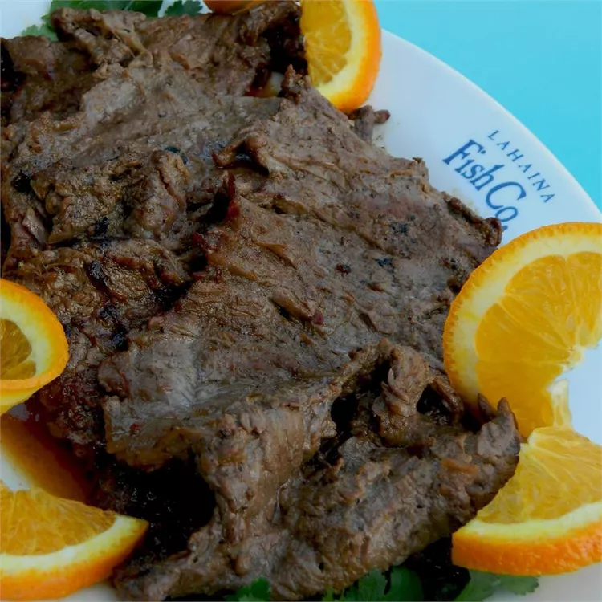

Delicious Grilled Blood Orange Chuck Steak Recipe

Description:
This delicious grilled blood orange chuck steak recipe from AllRecipes.com
will knock your socks off!
- Prep time - 15 mins
- Cook time - 10 mins
- Additional time - 8hrs
- Total time - 8hrs 25mins
- Servings - 6
- Yield - 6 servings
Ingredients:
- 1/2 cup blood orange marmalade
- 1/4 cup soy sauce
- 1/4 cup prepared mojo criollo dressing
- 2 tbsp brown sugar
- 2 tbsp orange juice
- 1 tsp ground ginger
- 1/4 tsp garlic powder
- 1+1/2 tsp grated orange zest
- 2 lbs beef chuck steak
Directions
-
Mix marmalade, water, soy sauce, mojo criollo dressing,
brown sugar, orange juice, ginger, garlic powder, and
orange zest in a bowl. Measure 1 cup marinade and pour
into a large resealable plastic bag; add beef to bag.
Seal bag and turn beef inside bag to coat completely.
Marinate in refrigerator, turning occasionally, for at
least 8 hours to overnight. Cover bowl with remaining
marinade and refrigerate.
-
Remove beef from marinade; discard used marinade.
-
Preheat grill for medium heat and lightly oil the grate.
-
Grill beef on the preheated grill, basting frequently with
reserved marinade until desired doneness is reached, 5 to 10
minutes per side. An instant-read thermometer inserted into
the center should read 140 degrees F (60 degrees C).
View more details here